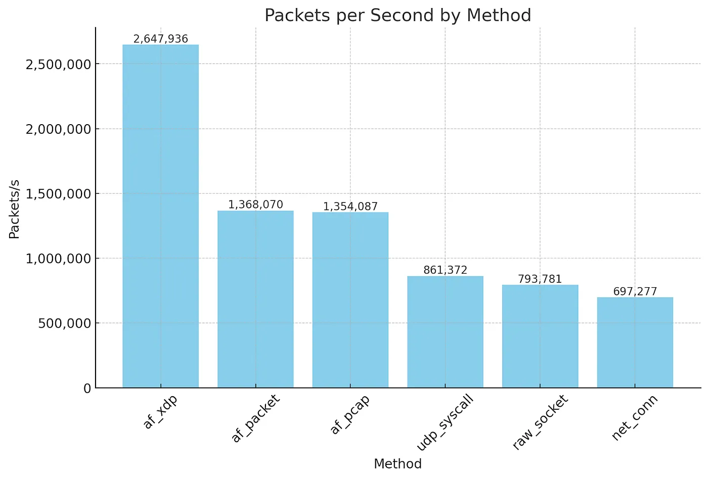
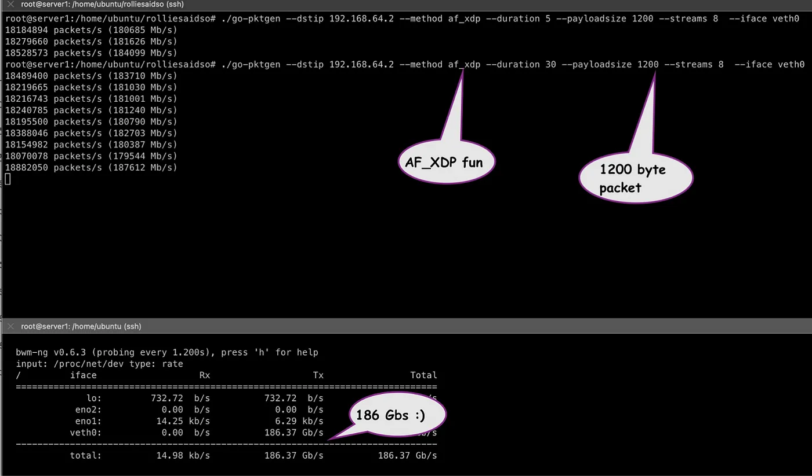

原文： High-Speed Packet Processing in Go: From net.Dial to AF_XDP by Andree Toonk.
推进Go的极限:从net.Dial到系统调用、AF_PACKET和极速AF_XDP。数据包发送性能的基准测试。
最近,我编写了一个Go程序,向数百万个IP地址发送ICMP ping消息。显然,我希望这个过程能尽可能快速高效地完成。因此,这促使我研究各种与网络栈交互和快速发送数据包的各种方法。这是一个有趣的旅程,所以在本文中,我将分享一些学习成果,并记录下来供将来参考:)你将看到,仅使用8个内核就可以达到1880万数据包/秒。这里还有一个GitHub仓库,其中包含了示例代码,可以方便地跟随学习。
使用场景
让我们先简单介绍一下问题背景。我希望能够从Linux机器上每秒发送尽可能多的数据包。有一些使用场景,例如我之前提到的Ping示例,但也可能是更通用的东西,如dpdk-pktgen或者类似iperf的工具。我想你可以将其总结为一种数据包生成器。
我使用Go编程语言来探索各种选项。一般来说,所探索的方法可以应用于任何编程语言,因为这些大多是围绕Linux内核提供的功能而构建的Go特定接口。但是,您可能会受到您最喜欢的编程语言中存在的库或支持的限制。
让我们开始冒险,探索Go中生成网络数据包的各种方式。我将介绍各种选项,最后我们将进行基准测试,显示哪种方法最适合我们的使用场景。我在一个Go包中包含了各种方法的示例;你可以在这里找到代码。我们将使用相同的代码运行基准测试,看看各种方法相比如何。
net.Dial
net.Dial方法是在Go中建立网络连接最先想到的选择。它是标准库net包提供的一种高级抽象方法,旨在以易于使用和直观的方式建立网络连接。您可以使用它进行双向通信,只需读写net.Conn(套接字)而无需担心细节。
在我们的情况下,我们主要关注发送流量,使用的net.Dial方法如下所示:
|
|
在此之后,您可以简单地像这样将字节写入conn:
|
|
您可以在文件af_inet.go中找到我们使用这种方法的代码。
就是这样!非常简单,对吗?然而,正如我们将在基准测试中看到的,这是最慢的方法,不是快速发送数据包的最佳选择。使用这种方法,我们可以达到大约697,277个数据包每秒。
Raw Socket
深入到网络栈层面,我决定在Go中使用原始套接字来发送数据包。与更抽象的net.Dial方法不同,原始套接字为我们提供了与网络栈更低层次的接口,可以对数据包头部和内容进行细粒度控制。这种方法允许我们手动构建整个数据包,包括IP头部。
要创建原始套接字,我们必须自己进行系统调用,给它正确的参数,并提供将要发送的流量类型。然后我们将获得一个文件描述符。接下来,我们可以对这个文件描述符进行读写操作。从高层次来看就是这样;完整代码请参见rawsocket.go：
|
|
就是这样,现在我们可以像这样对文件描述符进行原始数据包的读写操作:
|
|
由于我使用了IPPROTO_RAW，我们绕过了内核网络栈的传输层,内核期望我们提供完整的IP数据包。我们使用BuildPacket函数来实现这一点。工作量略有增加,但原始套接字的好处在于你可以构造任何你想要的数据包。
我们告诉内核只需接收我们的数据包,它需要做的工作就少了,因此这个过程更快。我们真正要求网络栈做的就是接收这个IP数据包,添加以太网头部,然后将其交给网卡进行发送。因此,很自然地,这个选项确实比Net.Dial选项更快。使用这种方法,我们可以达到约793,781个数据包每秒,比net.Dial方法高出约10万数据包每秒。
AF_INET 系统调用
现在我们已经熟悉了直接使用系统调用,我们还有另一个选择。在这个例子中,我们直接创建一个UDP套接字,如下所示：
|
|
在此之后,我们可以像之前一样使用Sendto方法简单地将有效负载写入套接字。
|
|
它看起来类似于原始套接字示例,但存在一些差异。关键区别在于,在这种情况下,我们创建了UDP类型的套接字,这意味着我们不需要像之前那样构造完整的数据包(IP和UDP头部)。使用这种方法时,内核根据我们指定的目标IP和端口来构造UDP头部,并处理将其封装到IP数据包的过程。
在这种情况下,有效负载仅是UDP有效负载。实际上,这种方法类似于之前的Net.Dial方法,但抽象程度更低。
与之前的原始套接字方法相比,我现在看到的是861,372个数据包每秒 - 提高了7万多。我们在每一步都变得更快。我猜我们获得了内核中一些UDP优化的好处。
Pcap 方法
在这里看到使用Pcap来发送数据包可能会感到惊讶。大多数人都知道pcap是从诸如tcpdump或Wireshark这样的工具中捕获数据包的。但它也是一种相当常见的发送数据包的方式。事实上,如果您查看许多Go-packet或Python Scappy示例,这通常是列出的发送自定义数据包的方法。因此,我认为我应该包括它并查看其性能。我持怀疑态度,但当看到每秒数据包数时,我很高兴地感到惊讶!
首先,让我们来看看Go语言是怎么实现的;同样,完整的示例请查看我在pcap.go中的实现。
我们首先创建一个Pcap句柄,如下所示:
|
|
然后我们手动创建数据包,类似于前面的原始套接字方法,但在这种情况下,我们包含了以太网头部。之后,我们可以将数据包写入pcap句柄,就完成了!
|
|
令我惊讶的是,这种方法带来了相当大的性能提升。我们远远超过了每秒一百万个数据包的大关: 1,354,087个数据包每秒 - 几乎比之前高出50万个数据包每秒!
注意,在本文的后面,我们将看到一个警告,但值得注意的是,当发送多个流(Go 例程)时,这种方法的工作效果会变差。
af_packet 方法
在我们探索 Go 中网络数据包制作和传输的各个层次时,接下来发现了 AF_PACKET 方法。这种方法在 Linux 上的入侵检测系统中很受欢迎,并且有充分的理由!
它让我们直接访问网络设备层,允许在链路层传输数据包。这意味着我们可以构建数据包,包括以太网头部,并直接将它们发送到网络接口,绕过更高层的网络层。我们可以使用系统调用创建 AF_PACKET 类型的套接字。在 Go 中,它看起来像这样:
|
|
这行代码创建一个原始套接字,可以在以太网层发送数据包。使用AF_PACKET时,我们指定SOCK_RAW表示我们对原始网络协议访问感兴趣。通过将协议设置为ETH_P_IP,我们告诉内核我们将处理IP数据包。
获得套接字描述符后,我们必须将其绑定到网络接口。这一步可确保我们构建的数据包通过正确的网络设备发送出去:
|
|
使用AF_PACKET构建数据包涉及手动创建以太网帧。这包括设置源和目标MAC地址以及EtherType,以指示该帧承载的有效负载类型(在我们的例子中是IP)。我们使用了与之前Pcap方法相同的BuildPacket函数。
然后,数据包就可以直接发送到这条链路上了:
|
|
事实证明,AF_PACKET方法的性能几乎与之前使用pcap方法时的性能相同。简单的谷歌搜索显示,libpcap(tcpdump和Go pcap绑定等工具所使用的底层库)在Linux平台上使用AF_PACKET进行数据包捕获和注入。所以,这解释了它们的性能相似性。
使用 AF_XDP 套接字
我们还有一个选项可以尝试。AF_XDP是一个相对较新的方式!它旨在通过利用传统Linux网络堆栈的快速路径,大幅提高应用程序直接从网络接口卡(NIC)发送和接收数据包的速度。另请参阅我之前关于XDP的博客文章。
AF_XDP利用了XDP(快速数据路径)框架。这种能力不仅通过避免内核开销提供了最小延迟,而且还通过在软件栈中尽可能早的点进行数据包处理,最大化了吞吐量。
Go标准库并没有原生支持AF_XDP套接字,我只能找到一个库来帮助实现这一点。所以这一切都还很新。
我使用了asavie/xdp这个库,你可以按如下方式初始化一个AF_XDP套接字。
|
|
注意,我们需要提供一个NIC队列;这清楚地表明我们正在比以前的方法工作在更低的级别上。完整的代码比其他选择要复杂一些,部分原因是我们需要使用用户空间内存缓冲区(UMEM)来存储数据包数据。这种方法减少了内核在数据包处理中的参与,从而缩短了数据包在系统层中传输的时间。通过直接在驱动程序级别构建和注入数据包。因此,请查看我的代码。
结果看起来不错;使用这种方法,我现在可以生成2,647,936个数据包每秒。这是我们之前使用AF_PACKET时性能的两倍!太棒了!
总结和一些要点
首先，这次做的很有趣，也学到了很多！我们研究了从传统的net.Dial方法生成数据包的各种选项，包括原始套接字、pcap、AF_PACKET，最后是AF_XDP。下面的图表显示了每种方法的数字（都使用一个CPU和一个NIC队列）。AF_XDP是最大的赢家！

如果感兴趣，您可以在类似下面的Linux系统上自行运行基准测试：
|
|
重要的是关注每秒数据包数，因为这是软件网络堆栈的限制。Mb/s 数只是数据包大小乘以您可以生成的每秒数据包数。从传统的net.Dial 方法转换到使用 AF_PACKET，可以看到轻松实现了两倍的提升。然后，在使用 AF_XDP 时又实现了另外两倍的提升。如果您对快速发送数据包感兴趣，这确实是很重要的信息！
上述基准测试工具默认使用一个 CPU 和一个 NIC 队列。但是，用户可以选择使用更多的 CPU，这将启动多个 Go 协程以并行执行相同的测试。下面的截图显示了使用 AF_XDP 运行具有 8 个流（和 8 个 CPU）的工具，生成了 186Gb/s 的速率，数据包大小为 1200 字节（18.8Mpps）！这对于一台 Linux 服务器来说确实非常令人印象深刻（而且没有使用 DPDK）。比如，比使用 iperf3 更快。

一些需要注意的地方和我未来想要关注的事项
使用 PCAP 方法运行多个流（go 协程）效果不佳。性能会显著下降。相比之下，可比较的 AF_PACKET 方法在多个流和 go 协程下表现良好。
我使用的 AF_XDP 库在大多数硬件 NIC 上似乎表现不佳。我在 GitHub 上提了一个问题，希望能得到解决。如果能更可靠些，那将是很好的，因为这在某种程度上限制了更多真实世界的 AF_XDP Go 应用。我大部分的测试都是使用 veth 接口进行的；我很想看看它在物理 NIC 和支持 XDP 的驱动程序上的表现。
事实证明，对于 AF_PACKET，通过使用内存映射（mmap）环形缓冲区，可以实现零拷贝模式。这个特性允许用户空间应用直接访问内核空间中的数据包数据，无需在内核和用户空间之间复制数据，有效减少了 CPU 使用量并提高了数据包处理速度。这意味着理论上 AF_PACKET 和 AF_XDP 的性能可能非常相似。然而，似乎 Go 的 AF_PACKET 实现不支持零拷贝模式，或者只支持 RX 而不支持 TX。所以我无法使用它。我找到了这个补丁，但不幸的是在一个小时内无法让其工作，所以我放弃了。如果这个补丁有效，这可能是首选的方法，因为你不必依赖 AF_XDP 支持。
最后，我很想在这个 pktgen 库中包含 DPDK 支持。这是唯一缺失的。但这是一个独立的大项目，我需要值得信赖的 Go DPDK 库。也许将来会实现！